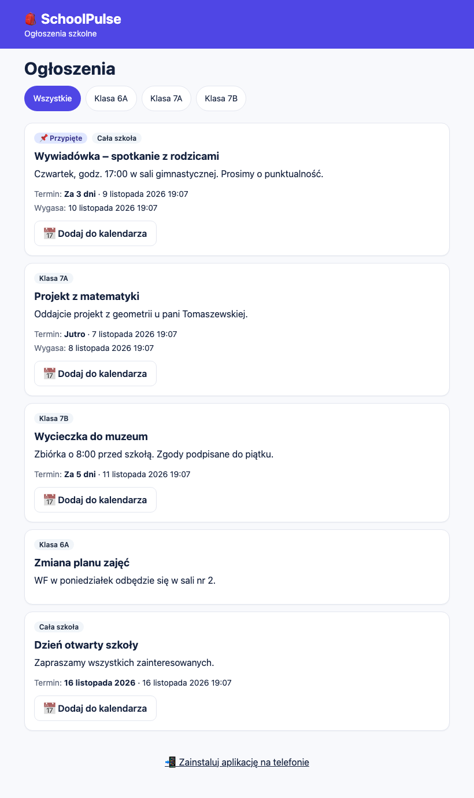
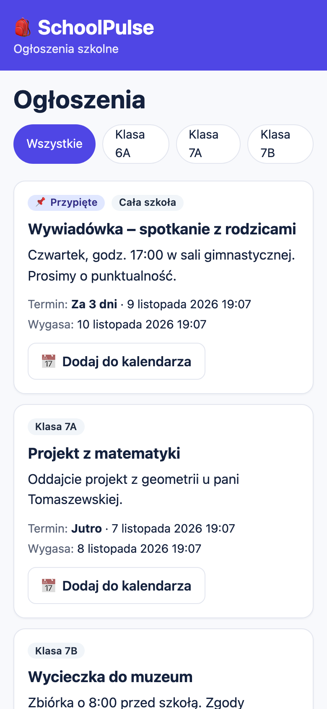
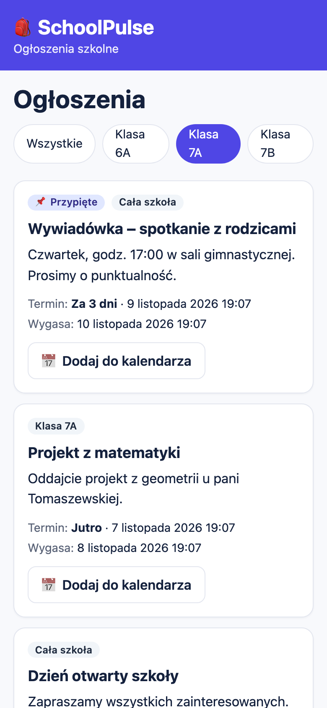
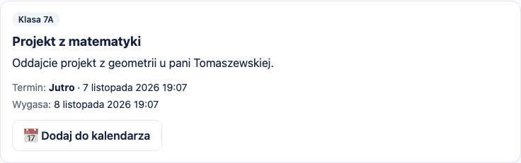
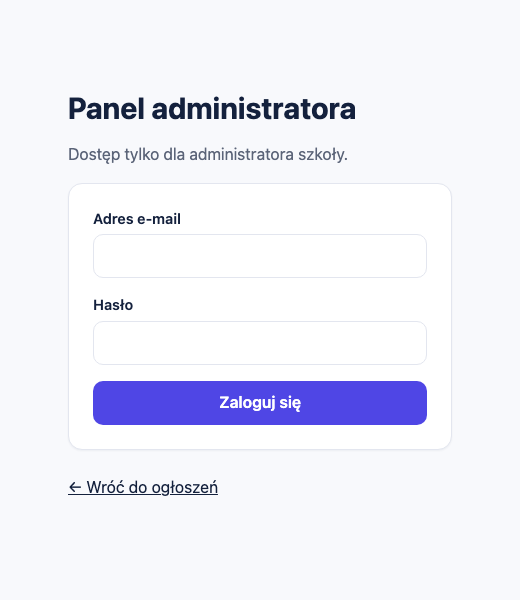
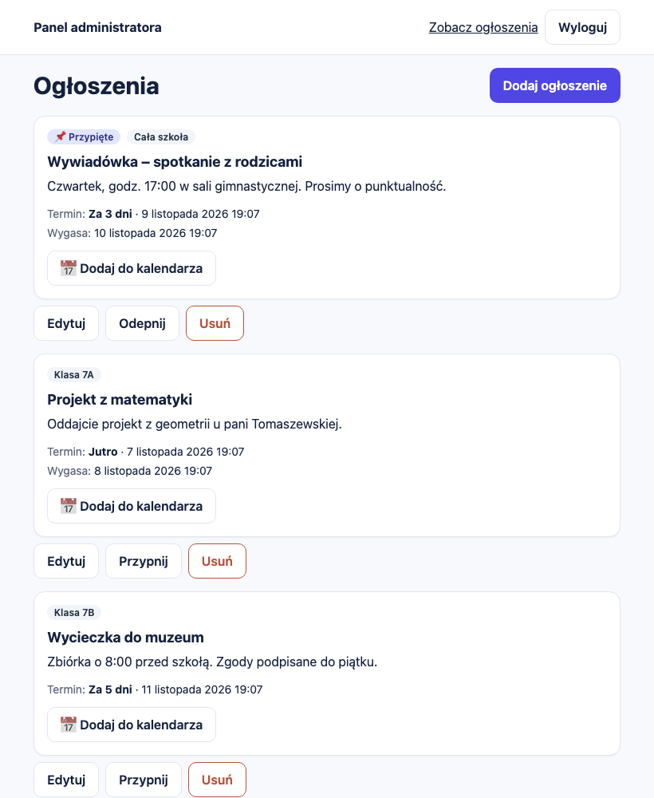
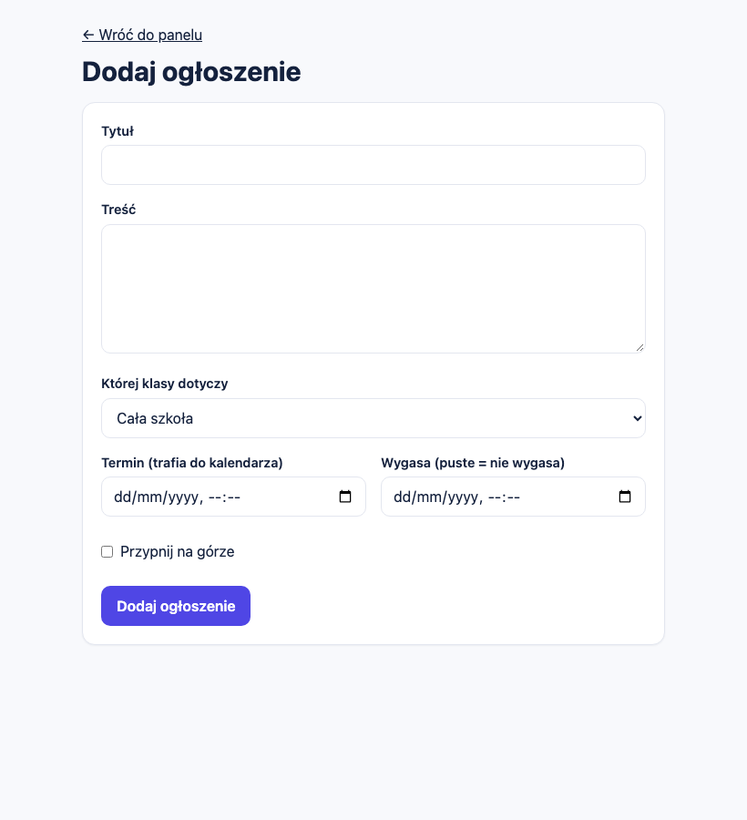
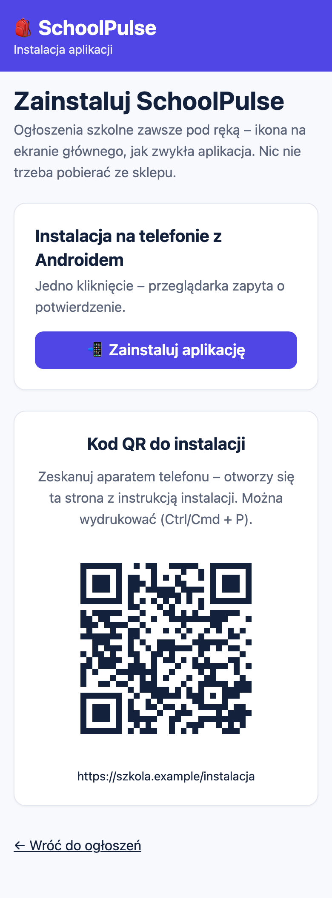
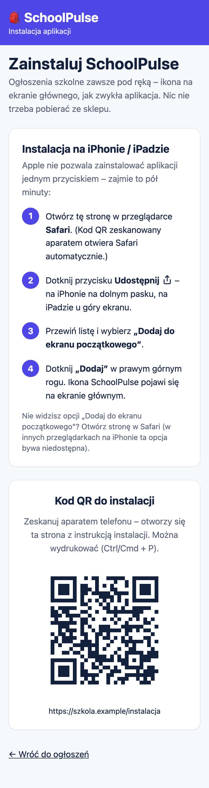

SchoolPulse – dokumentacja projektu
SchoolPulse to prosta aplikacja internetowa z ogłoszeniami szkolnymi. Uczniowie i rodzice otwierają jedną stronę zamiast przeszukiwać grupy na komunikatorach. Administrator dodaje ogłoszenia w osobnym panelu. Aplikację można zainstalować na telefonie jak zwykłą aplikację, bez sklepu.
Repozytorium: https://github.com/mat-jan/school-announcements
1. Do czego to służy
Informacje szkolne rozchodzą się dziś po wielu grupach i wiadomościach. Ważne ogłoszenie ginie między zdjęciami i odpowiedziami, a po tygodniu nikt nie wie, czy termin jest jeszcze aktualny. SchoolPulse robi jedną rzecz: pokazuje aktualne ogłoszenia w jednym miejscu, w kolejności, która ma sens.
Każde ogłoszenie ma tytuł i treść oraz cztery cechy, które wystarczają na co dzień:
- klasę – dotyczy jednej klasy albo całej szkoły,
- przypięcie – przypięte ogłoszenia są zawsze na górze,
- termin – data i godzina, np. oddania projektu lub spotkania; z terminu można jednym kliknięciem zrobić wpis w kalendarzu telefonu,
- datę wygaśnięcia – po niej ogłoszenie samo znika z listy, więc nikt nie musi go sprzątać.
Aplikacja nie ma kont uczniów, komentarzy ani czatu. To celowe: ma być podobna do tablicy ogłoszeń na korytarzu, tylko aktualna i zawsze pod ręką.
2. Jak to wygląda
2.1. Strona dla uczniów i rodziców
Pierwszy ekran to lista ogłoszeń. Nie trzeba się logować. Na górze są ogłoszenia przypięte, niżej najnowsze. Przyciski z nazwami klas zawężają listę do wybranej klasy (razem z ogłoszeniami dla całej szkoły).

Lista ogłoszeń. Przypięta wywiadówka jest na górze, każde ogłoszenie pokazuje klasę, termin i datę wygaśnięcia.


Ta sama strona na telefonie, po lewej wszystkie ogłoszenia, po prawej po wybraniu klasy 7A.
Przy ogłoszeniu z terminem jest przycisk Dodaj do kalendarza. Pobiera on plik kalendarza (.ics), który otwiera się w Kalendarzu na iPhonie, w Kalendarzu Google i w Outlooku. Wpis trwa pół godziny i zawiera przypomnienie dzień wcześniej.

2.2. Panel administratora
Panel jest osobną częścią aplikacji, dostępną pod adresem /admin. Nie ma do niego odnośnika na stronie publicznej, a wejście wymaga zalogowania.

Po zalogowaniu administrator widzi wszystkie ogłoszenia, także wygasłe. Przy każdym są trzy przyciski: Edytuj, Przypnij (albo Odepnij) i Usuń. Usunięcie wymaga potwierdzenia.

Nowe ogłoszenie dodaje się w jednym formularzu. Termin i datę wygaśnięcia można zostawić puste.

2.3. Instalacja na telefonie
Strona /instalacja jest przeznaczona do kodu QR, który można wydrukować i powiesić w szkole. Po zeskanowaniu kodu telefon otwiera stronę dopasowaną do systemu:
- na Androidzie (Chrome) jest przycisk Zainstaluj aplikację, który otwiera natywne okno instalacji,
- na iPhonie i iPadzie (Safari) strona pokazuje cztery kroki: Udostępnij, Dodaj do ekranu początkowego, Dodaj. Apple nie pozwala uruchomić instalacji z poziomu strony, więc instrukcja jest konieczna,
- na komputerze strona wyjaśnia, że aplikację instaluje się na telefonie, i pokazuje sam kod QR.
Po instalacji aplikacja otwiera się z ikony, bez paska przeglądarki.


Po lewej Android z przyciskiem instalacji, po prawej iPhone z instrukcją krok po kroku. Adres w kodzie QR na zrzutach jest przykładowy.
3. Jak z tego korzystać
Odwiedzający
- Otwórz stronę główną. Ogłoszenia są od razu widoczne.
- Wybierz klasę przyciskiem nad listą, jeśli interesują Cię tylko jej ogłoszenia.
- Przy ogłoszeniu z terminem naciśnij Dodaj do kalendarza i otwórz pobrany plik.
- Na dole strony jest odnośnik do instalacji aplikacji na telefonie.
Lista pokazuje 20 ogłoszeń na stronę, starsze są pod przyciskiem Starsze. Ogłoszenia po dacie wygaśnięcia nie są wyświetlane.
Administrator
- Wejdź na
/admin/logowaniei zaloguj się. - Kliknij Dodaj ogłoszenie i wypełnij formularz:
| Pole | Opis |
|---|---|
| Tytuł | od 3 do 120 znaków |
| Treść | do 2000 znaków, zwykły tekst |
| Której klasy dotyczy | jedna z klas albo „Cała szkoła” |
| Termin | opcjonalnie; od niego zależy przycisk kalendarza |
| Wygasa | opcjonalnie; puste oznacza, że ogłoszenie nie wygasa. Nie może być wcześniejsze niż termin |
| Przypnij na górze | ogłoszenie zostaje na początku listy |
- Zmieniasz ogłoszenie przyciskiem Edytuj, przypinasz lub odpinasz przyciskiem Przypnij i usuwasz przyciskiem Usuń.
- Na dole panelu dodajesz klasy. Klasy, do których przypisano ogłoszenia, nie da się usunąć.
- Na końcu użyj przycisku Wyloguj. Sesja jest odświeżana automatycznie, więc na cudzym komputerze wylogowanie jest konieczne.
Błędy w formularzu są opisane po polsku, a wpisane dane zostają w polach.
Administratorem jest konto, które znajduje się na liście administratorów w bazie. Samo założenie konta nie daje dostępu do panelu, a aplikacja nie ma żadnej funkcji nadawania uprawnień. Nowego administratora dodaje właściciel projektu bezpośrednio w bazie danych.
4. Jak to jest zbudowane
Telefon / przeglądarka (PWA)
│ HTTPS
▼
Vercel: aplikacja Next.js (strony, akcje serwerowe)
│
▼
Supabase: logowanie (Auth) + baza PostgreSQL z regułami dostępu (RLS)
Strona publiczna czyta dane bez logowania, ale baza zwraca tylko ogłoszenia, które nie wygasły. Panel zapisuje dane w imieniu zalogowanego administratora, więc te same reguły w bazie obowiązują także przy zapisie.
| Element | Rozwiązanie |
|---|---|
| Aplikacja | Next.js 16 (App Router), React 19, TypeScript |
| Wygląd | Tailwind CSS, interfejs w całości po polsku |
| Logowanie i dane | Supabase: Auth i PostgreSQL z Row Level Security |
| Hosting | Vercel |
| Instalacja | PWA: manifest, ikony PNG, service worker z ekranem offline |
| Walidacja | zod, komunikaty po polsku |
| Testy | Vitest, Playwright, testy na prawdziwej bazie |
Model danych
Baza ma trzy tabele.
| Tabela | Zawartość |
|---|---|
classes |
nazwy klas (unikalne, bez względu na wielkość liter) |
announcements |
tytuł, treść, klasa (puste = cała szkoła), przypięcie, termin, data wygaśnięcia, daty utworzenia i zmiany |
admins |
identyfikatory kont, które mają dostęp do panelu |
Dla listy publicznej założono indeksy po kolejności wyświetlania (przypięte, najnowsze), po dacie wygaśnięcia i po klasie. Lista pobiera dane stronami, jednym zapytaniem na stronę.
Czas
Terminy są zapisywane w UTC, a wprowadzane i wyświetlane w czasie polskim (Europe/Warsaw), także w okolicach zmiany czasu. Plik kalendarza ma poprawną godzinę niezależnie od strefy telefonu.
5. Bezpieczeństwo
Dane w tej aplikacji nie są poufne, ale panel zmienia to, co widzą wszyscy, więc zabezpieczono go starannie.
| Zagrożenie | Zabezpieczenie |
|---|---|
| Ktoś zapisuje dane bez uprawnień | Reguły w bazie (RLS): zapis tylko dla administratora z tabeli admins. Sprawdzone testami na prawdziwej bazie, także dla zwykłego zalogowanego użytkownika |
| Ktoś nadaje sobie rolę administratora | Rola pochodzi wyłącznie z tabeli w bazie, nie z przeglądarki. Tabeli nie da się zmienić przez API |
| Wejście do panelu bez logowania | Sesję sprawdza serwer przy każdej stronie i każdej akcji, a nie tylko ukryte przyciski |
| Zgadywanie haseł | Limit 5 nieudanych prób na 15 minut oraz wbudowane limity logowania w Supabase. Błąd nie zdradza, czy konto istnieje |
| Wyciek klucza administracyjnego | Aplikacja używa tylko klucza publicznego. Klucz z pełnym dostępem nie występuje w kodzie aplikacji ani w plikach wysyłanych do przeglądarki |
| Złośliwa treść ogłoszenia | Treść to zwykły tekst, wyświetlany z ucieczką znaków. Aplikacja nie wstawia kodu HTML |
| Ukryte dane wygasłych ogłoszeń | Baza nie zwraca ich osobom niezalogowanym, także przy bezpośrednim zapytaniu do API |
| Konto testowe w produkcji | Konto istnieje tylko w bazie deweloperskiej. Aplikacja produkcyjna odrzuca takie logowanie, a przed wdrożeniem skrypty sprawdzają konfigurację i bazę |
Panel i jego odpowiedzi mają nagłówek zakazujący indeksowania przez wyszukiwarki. Strony wysyłają też standardowe nagłówki bezpieczeństwa.
6. Środowiska i wdrożenie
Projekt działa w trzech środowiskach z osobnymi bazami danych:
| Środowisko | Gałąź | Hosting | Baza |
|---|---|---|---|
| Lokalne | dowolna | komputer programisty | lokalny Supabase w Dockerze |
| Testowe | develop |
Vercel Preview (chronione logowaniem Vercel) | osobny projekt Supabase |
| Produkcyjne | main |
Vercel Production | osobny projekt Supabase |
Środowisko testowe nigdy nie łączy się z bazą produkcyjną. Dane demonstracyjne i konto testowe powstają tylko w środowisku deweloperskim. Gałąź main jest przygotowywana osobnym skryptem, który usuwa wszystko, co deweloperskie, a przed wdrożeniem uruchamiane są kontrole: czy konfiguracja produkcyjna nie zawiera ustawień testowych, czy w repozytorium nie ma danych demonstracyjnych i czy produkcyjna baza nie zawiera konta testowego.
Budowa na darmowych planach Vercel i Supabase jest zamierzona. Aplikacja nie używa zadań w tle ani połączeń w czasie rzeczywistym, nie przechowuje obrazów i pobiera dane stronami, więc zużycie zasobów jest niewielkie. Darmowy plan Supabase usypia projekt po tygodniu bez ruchu i nie tworzy kopii zapasowych do odtworzenia, dlatego ważne dane warto okresowo eksportować.
7. Testy
Testy uruchamia się poleceniami npm test, npm run test:rls, npm run test:e2e, npm run test:install i npm run test:prod. Poniżej wynik ostatnich przebiegów (listopad 2026).
| Rodzaj testów | Liczba | Co sprawdzają |
|---|---|---|
| Jednostkowe | 18 | wygasanie, plik kalendarza, walidacja, czas polski, reguły produkcji |
| Autoryzacja na prawdziwej bazie | 18 | kto może czytać i zapisywać dane, ograniczenia bazy |
| Przeglądarkowe (Playwright) | 32 | przebiegi administratora i odwiedzającego, telefon, tablet i komputer, dostępność, tryb offline |
| Strona instalacji | 14 | instrukcje dla iPhone'a i Androida, kod QR odczytany niezależną biblioteką, ikony |
| Wersja produkcyjna | 3 | odrzucenie konta testowego, brak tras testowych |
| Kontrole konfiguracji | 6 | wykrywanie ustawień zabronionych w produkcji |
Testy dostępności (axe, poziom WCAG A i AA) nie wykazały poważnych naruszeń. Przyciski i odnośniki mają co najmniej 44 piksele wysokości.
8. Ograniczenia i dalszy rozwój
Aplikacja jest celowo mała. Jej obecne ograniczenia:
- Jest jedna rola, administrator. Nie ma kont uczniów, rodziców ani nauczycieli.
- Treść ogłoszeń nie ma formatowania, a ogłoszenia nie mają zdjęć ani załączników.
- Nie ma powiadomień push ani e-mail. Użytkownik dowiaduje się o nowym ogłoszeniu po wejściu do aplikacji.
- Nowego administratora dodaje się ręcznie w bazie, bo panel nie ma zarządzania użytkownikami.
- Limit prób logowania w aplikacji działa osobno na każdej instancji serwera. Główną ochroną jest limit wbudowany w Supabase.
- Skrócenie sesji administratora do kilku godzin wymaga płatnego planu Supabase.
- Instalację na telefonach sprawdzono w symulacji przeglądarki. Test na prawdziwym Androidzie i iPhonie jest jeszcze do wykonania.
Najbardziej naturalne kolejne kroki to powiadomienia push (przydatne zwłaszcza na Androidzie), więcej niż jedno konto administratora z zarządzaniem w panelu oraz zdjęcia w ogłoszeniach. Wszystkie dałyby się dodać bez zmiany obecnej struktury.